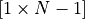
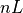
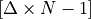
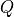
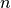
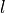
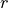

Symbol Glossary¶

Total number of nodes, calculated as the length of
nodes.
Lengths of segments between the nodes in the shape . See
_FE_precalc()for the exact definition.- 
Segment lengths in the shape . See
_FE_precalc()for the exact definition.
Any of the precalculated absolute Gaussian integration points as saved in
xintegration. The calculation of these values is performed inset_gaussian_quadrature(). Matrix of dimension .
A position within the domain as defined by
nodes.
A state within the domain as defined by
nodes.
Used as a subscript indicating time.
Finite derivative of
w.r.t. as argument to
systemfluxfuncand calculated inset_systemfluxfunction().- 
System flux function saved in the model under
systemfluxfunc.
Spatial and state dependent forcing functions saved in the model under
spatfluxandSspatflux.
Positional and State dependent forcing functions saved in the model under
pointfluxandSpointflux.
Storage change w.r.t. previous time step. The calculation is performed by
calcbalance(). Matrix of dimension .
Accumulation of all point and spatial fluxes. The calculation is perfomed by:py:meth:~waterflow.flow1d.flowFE1d.Flow1DFE.calcbalance. Matrix of dimension .

Internal fluxes in the system. The calculation is performed by
_internal_forcing(). Matrix of dimension .
, sum of all forcing fluxes, excluding the storage change forcing. The calculation is performed by
calcbalance()., net fluxes in the system. The calculation is performed by
calcbalance().
, global sum of all forcing fluxes, including the storage change forcing. This data is saved in
forcing. Matrix of dimension .
, sum of all jacobian matrices. This jacobian is saved in
coefmatr, and is calculated in_CMAT(). Matrix of dimension![[N \times N]](_images/math/2c80fc10d15b799db165406b48a3d939a1312b74.png) .
.
Jacobian of , calculated by
_CMAT(). Matrix of dimension.Jacobian spatial state dependent forcing functions
, calculated by
_CMAT(). Matrix of dimension.
Jacobian state dependent forcing function
, calculated by
_CMAT(). Matrix of dimension.
Node number (1 indexed) used a subscript.

Index, used as a subscript, to indicate any of the  spatial state dependent forcing functions.

Index, used as a subscript, to indicate any of the
 state dependent
forcing functions.
state dependent
forcing functions.Total number of spatial state dependent forcing functions as saved in
Sspatflux.Total number of state dependent forcing functions as saved in
Spointflux.Legendre polynomial of degree
 , see
, see
set_gaussian_quadrature().Gaussian Quadrature degree as saved in
gauss_degree.
Index, used as subscript, of a specific Gaussian quadrature degree.

All positions of the Gaussian integration procedure for degree
.
Saved in the model under _xgauss.
All weights of the Gaussian integration procedure for degree
.
Saved in the model under _wgauss.Distribution factor for pointflux
towards the nearest left node.
The definition and calculation formula can be found in
add_pointflux().Distribution factor for pointflux
towards the nearest right node.
The definition and calculation formula can be found in
add_pointflux().- 
Subscript to indicate the nearest left element.
- 
Subscript to indicate the nearest right element.